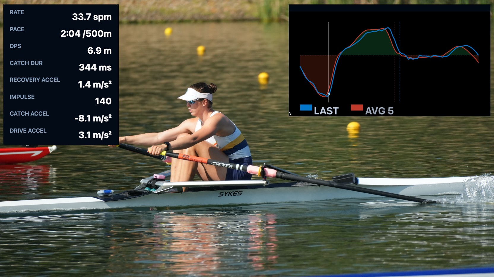
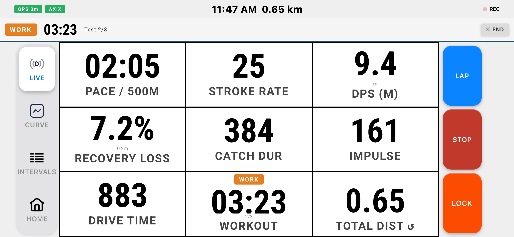
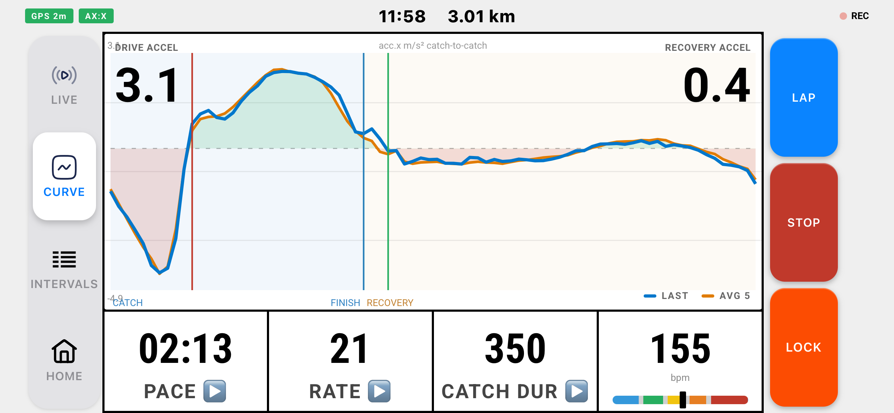
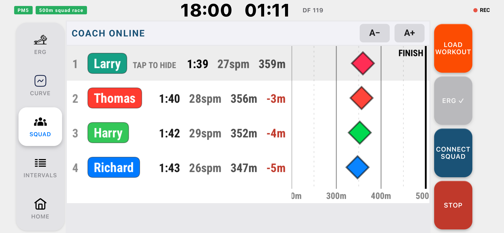
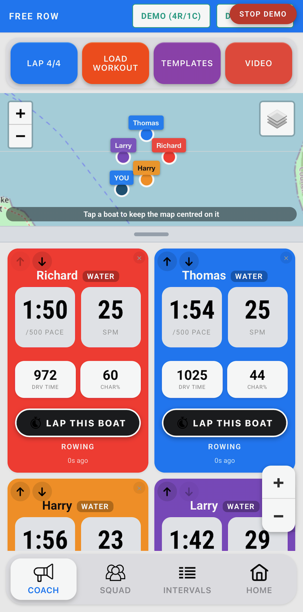
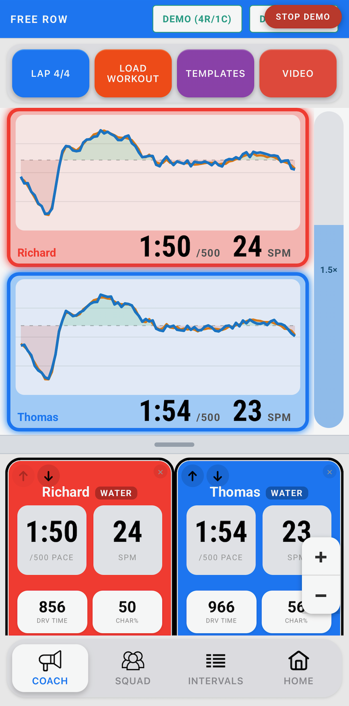
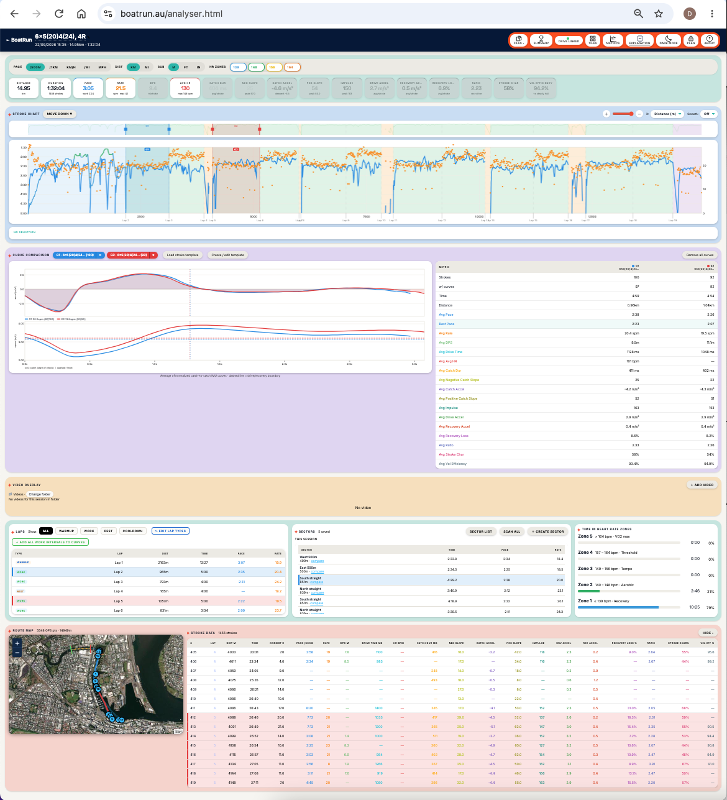
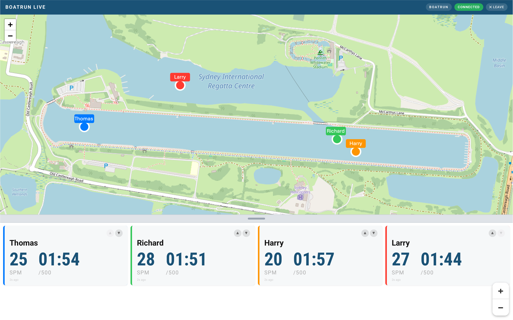

Real-time rowing metrics built for rowers, coxes and coaches who want raw data, honest precision, and tactical confidence on the water.

The sensor engine reads boat motion, stroke dynamics and biometric data up to 50 times a second, every stroke, every session.

Mount your phone, press calibrate and go. BoatRun delivers a high-contrast, sun-readable metric overlay with immediate feedback to keep you in perfect form.

Connect to erg as an individual or as part of a squad. Race against or train with others in real-time.

Follow every rower's metrics live from the anywhere in the world. Track real-time metrics and acceleration curves against templates.


Your data deserves a bigger screen. Sessions sync straight to your desktop or tablet for close study.

Share live positions and pacing with parents, supporters and coaches on the bank. No install, no account — just a link and a squad code.
Open Viewer
Row, Cox or Coach — one native app for iPhone and Android. Live metrics, squad sync, video and Strava export.
Get for iOS (TestFlight) Get for Android (email request)Full single-session review is always free, on any browser. No install needed.
Open AnalyserLive squad position, pace and stroke rate for spectators and coaches ashore.
Open ViewerEverything from mounting your phone to building custom squad workouts.
BoatRun is in beta on both platforms ahead of its App Store launch. iPhone and iPad via Apple TestFlight. Android is invite-only — email me and I'll add your Google account to the test group.